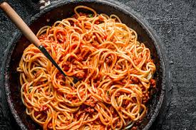

Spaghetti

Scrumptious spaghetti with a wonderful pasta sauce and lentils. You will be going back for seconds!
Ingredients
1 package of whole wheat noodles
1 can of Prego Spaghetti Sauce
4 or 5 leaves of fresh basil
1 tsp garlic salt or to taste
Steps
- Fill a pot with water and and a pinch of salt. Turn your stove on medium and bring water to a boil. Place lid on pot to boil faster.
- Once water is boiling, add noodles and cook for the time on the box.
- Drain noodles with a strainer and add back to the pot. Poor in your pasta sauce and lentils. Mix.
- Optional: add fresh basil and garlic powder
- Enjoy!